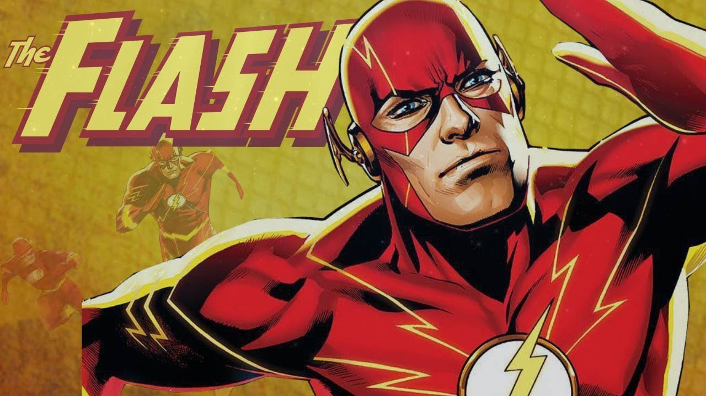
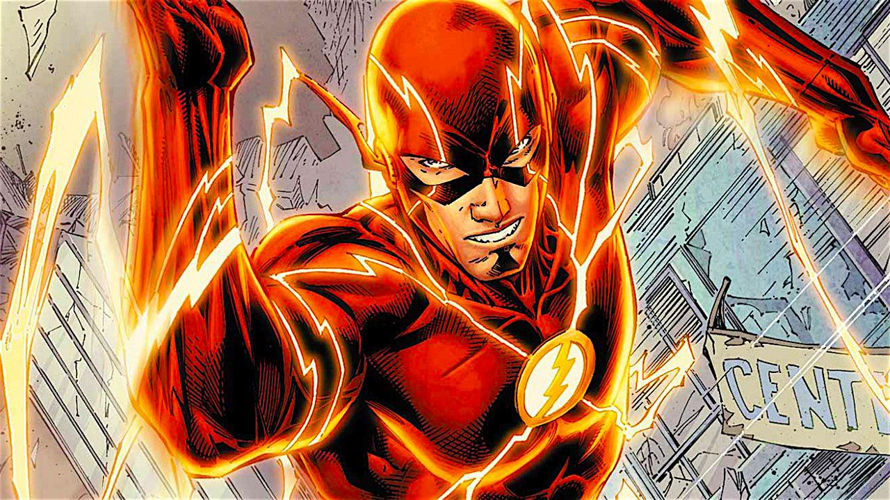
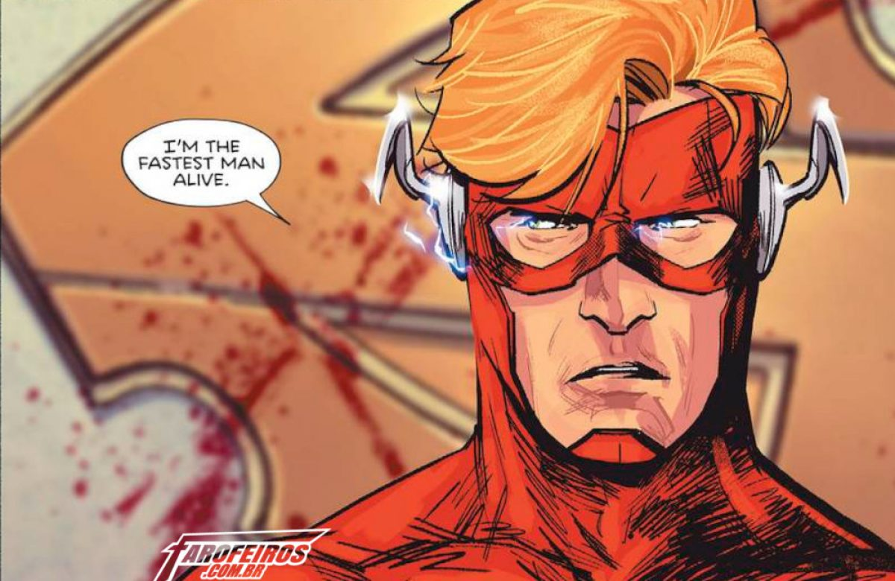
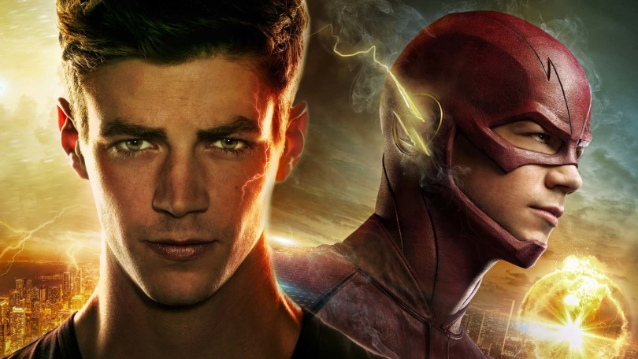
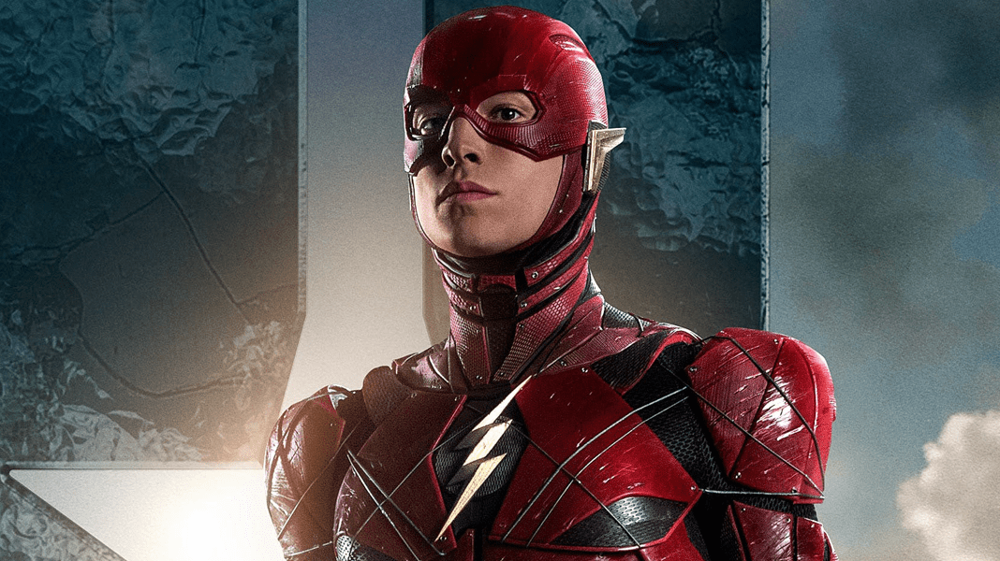

Quem é Flash
O "Flash" é um nome compartilhado por diversos super-heróis da DC Comics. Criado pelo escritor Gardner Fox e pelo artista Harry Lampert , o Flash original estreou em Flash Comics #1 (1940).
Também chamado de Velocista Escarlate, o Flash possui velocidade e reflexos sobre-humanos e viola certas leis da física, podendo ultrapassar a velocidade da luz. Até então, quatro personagens ganharam a supervelocidade de modos diferentes e assumiram a identidade de Flash: Jay Garrick (1940-1956), Barry Allen (1956-1986, 2008-presente), Wally West (1986-2006, 2007-presente) e Bart Allen (2006-2007).
Barry Allen é considerado o primeiro super-herói da Era de Prata dos Quadrinhos e permaneceu como um dos mais populares desde então. Cada versão do Flash foi um membro-chave ou da Sociedade da Justiça da América ou da Liga da Justiça, os principais grupos da DC.

Conheça os diferentes Flash
Era de Ouro
O Flash da Era de Ouro era Jay Garrick, um estudante que ganhou sua supervelocidade através da inalação de vapores de água dura — depois alterada para vapores de água pesada — e que usa um elmo metálico com asas do Deus da Mitologia Grega Hermes. Ele é reconhecido como o primeiro velocista super-humano dos quadrinhos e um dos primeiros a ter apenas um superpoder, ao contrário do Superman.

Garrick foi um personagem popular nos anos 40. Estrelava as revistas Flash Comics e All-Flash Quarterly (depois publicada quinzenalmente como All-Flash) e participava como coprotagonista da revista Comic Cavalcade. Foi membro fundador da Sociedade da Justiça da América, o primeiro grupo de super-heróis, cujas aventuras aconteciam em All Star Comics. Com os super-heróis se popularizando no pós-guerra, Flash Comics foi cancelada na edição #104 (1949). A última história da Sociedade da Justiça aconteceu em All Star Comics #57, de 1951 (a revista continuaria com o título mudado para All Star Western).
Era de Prata dos Quadrinhos
Em 1956, a DC Comics obteve sucesso revivendo super-heróis, o que ficou conhecido como a Era de Prata dos Quadrinhos. Ao invés de trazer de volta os mesmo heróis da Era de Ouro dos Quadrinhos, como fracassara a Atlas Comics, a DC reimaginou-os como novos personagens para a época presente. O Flash foi o primeiro a ser retomado em Showcase #4 (outubro de 1956).

Este novo Flash era Barry Allen, um funcionário da polícia científica que ganhou seus poderes após ser banhado por produtos químicos quando seu laboratório foi atingido por um raio. Ele adotou o nome de "Flash" depois de ler uma história em quadrinhos sobre o Flash original.[1] Depois de diversas aparições em Showcase, Allen recebeu seu próprio título, The Flash, cuja primeira edição foi a de número #105 (número onde Flash Comics havia parado).
Era Moderna
O terceiro Flash foi Wally West, que foi introduzido em Flash #110 (1959) como Kid Flash. West, sobrinho da esposa de Barry Allen, ganhou os poderes de Flash devido a um acidente idêntico ao de Barry Allen. Adotando a identidade de Kid Flash, ele manteve-se membro dos Jovens Titãs por anos. Após a morte de Barry Allen, West adotou a identidade de Flash em Crise nas Infinitas Terras #12 e recebeu sua própria série, começando com The Flash vol.2, #1 em 1987.
Devido a Crise Infinita e o pulo no tempo, "Um Ano Depois", no Universo DC, DC cancelou The Flash vol. 2, em Janeiro de 2006 em #230. Uma nova série, The Flash: The Fastest Man Alive, começou em 21 de Junho de 2006. Escrito por Danny Bilson e Paul De Meo e desenhada por Ken Lashley, esta série revela o neto de Barry, Bart Allen como herdeiro de seu manto.

Flash: Fastest Man Alive foi cancelado em seu número #13. Em seu lugar The Flash (vol.2) foi revivido em seu número 231. Mark Waid escreveu parcialmente a série, bem como um All-Flash especial que precedeu este retorno.
As aventuras da família West foram momentaneamente concluídas na revista The Flash vol. 2, que foi encerrada com o número 247 em 2009.
Em abril de 2009, Geoff Johns e Ethan Vansciver iniciaram a saga Flash Rebirth que consolidou o retorno de Barry Allen como o Flash, além de definir a situação dos outros velocistas do Universo DC.
Outras Midias
Televisão
Em 1990 foi adaptada para a TV a história do segundo Flash, Barry Allen, interpretado por John Wesley Shipp.

Em 2004 na série Smallville marca a primeira aparição de Bart Allen no episódio 5 (Run) da 4ª temporada roubando a carteira de Jonathan Kent, depois aparece novamente em 2006 no episódio 11 da 6ª temporada (Justice) junto com Aquaman, Ciborgue e Arqueiro Verde.
Em 2013, Barry Allen apareceu na série do canal The CW, Arrow, interpretado por Grant Gustin.
Cinema
Em Justice League: The Flashpoint Paradox (animação de 2013) a trama é centrada no Flash e trata de viagens no tempo e as implicações que uma simples mudança num evento pode causar na continuidade.
Em 2014, ele aparece na animação JLA Adventures: Trapped in Time como membro da Liga da Justiça em luta contra a Legião do Mal.

Flash está presente no Universo Estendido DC, tendo breves participações nos filmes Batman v Superman: Dawn of Justice e Esquadrão Suicida, interpretado por Ezra Miller, que também reprisará o papel, dessa vez como um dos protagonistas, no filme Liga da Justiça. Além disso um filme solo do personagem também está nos planos do estúdio.
Parceiros e Inimigos
Parceiros
- Batman
- Superman
- Mulher - Maravilha
- Kid Flash
- Lanterna verde
Inimigos
- Gorila Grodd
- Flash Reverso
- O Pensador
- Zoom
- Savitar
Até a Proxima 烙